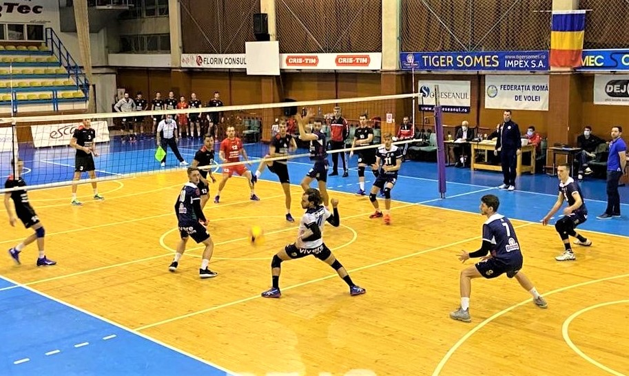

Bine ați venit în lumea voleiului!
Voleiul este unul dintre cele mai populare sporturi de echipă din lume, practicat atât în sală cât și pe plajă. Acest site îți oferă toate informațiile necesare pentru a înțelege și aprecia acest sport captivant.
De la istoria voleiului la cele mai importante reguli, de la tehnici de bază la profilele marilor jucători, găsești aici tot ce trebuie să știi despre acest sport dinamic.